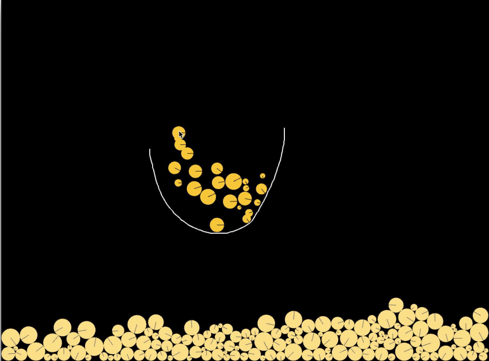

Welcome to my Gallery !
I have made many applications, games and simulations, so let me introduce some of them here. If you are interested in my products, please visit my Github. Click avobe Github icon !
. . .
Java — Chasing AI
This AI is created by Java. The small red rectangle(predetor) chases you automatically. Users can control the small blue rectangle(pray) by using arrow keys.
———————
Python — LifeGame
The Game of Life, also known simply as Life, is a cellular automaton devised by the British mathematician John Horton Conway in 1970.
It is a zero-player game, meaning that its evolution is determined by its initial state, requiring no further input.
One interacts with the Game of Life by creating an initial configuration and observing how it evolves.
— Rules —
The universe of the Game of Life is an infinite, two-dimensional orthogonal grid of square cells, each of which is in one of two possible states, live or dead, (or populated and unpopulated, respectively).
Every cell interacts with its eight neighbours, which are the cells that are horizontally, vertically, or diagonally adjacent.
At each step in time, the following transitions occur:
1:Any live cell with fewer than two live neighbours dies, as if by underpopulation.
2:Any live cell with two or three live neighbours lives on to the next generation.
3:Any live cell with more than three live neighbours dies, as if by overpopulation.
4:Any dead cell with exactly three live neighbours becomes a live cell, as if by reproduction.
These rules, which compare the behavior of the automaton to real life, can be condensed into the following:
1:Any live cell with two or three live neighbours survives.
2:Any dead cell with three live neighbours becomes a live cell.
3:All other live cells die in the next generation. Similarly, all other dead cells stay dead.
The initial pattern constitutes the seed of the system.
The first generation is created by applying the above rules simultaneously to every cell in the seed;
births and deaths occur simultaneously, and the discrete moment at which this happens is sometimes called a tick.
Each generation is a pure function of the preceding one.
The rules continue to be applied repeatedly to create further generations.
———————
Java — Othello —
This othello programming is created by Java. Users can control the yellow cursor by using arrow keys.
———————
C++ — Gravity world simulation —

This is a simulation of the gtavity world.
Users can add yellow balls to click keyboard 'c', and add lines to drag by using a touch panel.
I use of2dBox that is an addon of openframeworks.
———————